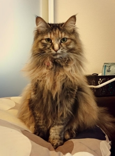
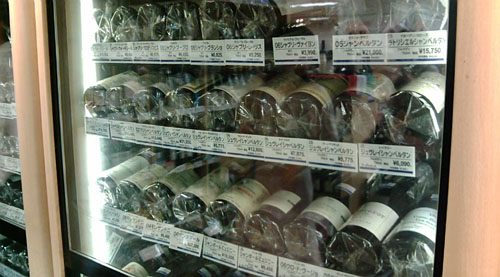
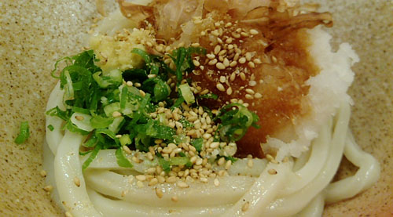
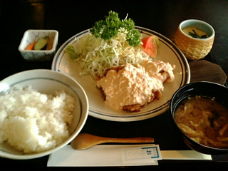
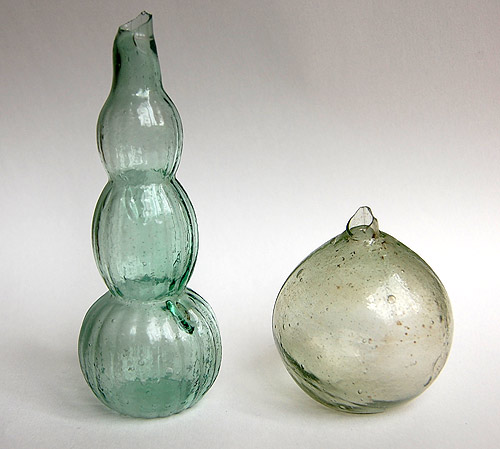
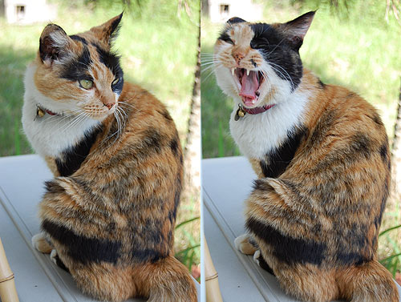
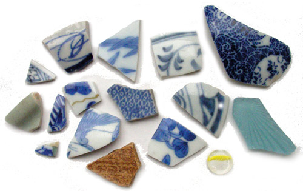
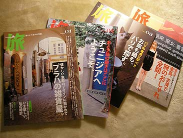

カテゴリ: 未分類
-
ファーストクラスとゾンビタクシー③
私は王様にはなった事が無い。女性なので女王さまになるのかもしれないけれども、女王さまにも王女様にもなった事はない。けれども…ここはなんだ！城か！私の城か！ 一人暮らしを始めたときに感じた高揚感！…

-
ちょびっと試運転
2011年11月から休止中！ ちょいと動かして確認中( ・∇・)

-
台湾＠猫空
台北有一个有名的地方是[猫空]，我喜欢这个名字。 [猫][空]我都喜欢。 我想一想！ 很多猫躺在苍天！很有意识！ …

-
今年のサンバ
…も、無事終了してます。 今年はさらっと通りすがりに見物なので、画像少なめで。

-
実家まで
池袋西武のワイン売り場。 へー…品揃えはやっぱりいいね。と横目でちらりと見て、写真とって、自分はコノスル買って実家に。 しばらくシンプルな時刻表生活を送っていたせーか、 「特急、快速、準急、通勤快…

-
はなまるのひる
ひさしぶりにしこしこのうどん。 はなまるうどん。しょうゆ。

-
ぽにょ
まだちょこっと余裕があるので、「崖の上のポニョ」のレイトショー見てきましたー。 レビューを見るとあんまり評判良くないのと、やたら「怖い」「気味悪い」…という話がでてくるので、どきどきしながら見たけど、…
-
空港
空港で遅い昼食。 向かいの席にパナマ帽被って雰囲気むんむんのオジサマがいて 今時パナマ帽なんて珍しいなーなんて思いながら新米ご飯もぐもぐしてたら、 ごっついアタッシュケースを席に置いたままオジサマは店…

-
なんのみ
イチジクっぽいけど何の実かな～ ギリシャで街のあちこちになっていた西洋イチジクっぽい。

-
のびてます
びよーん。 のびてますが元気です。あつい。 ミケ。お盆で美味しいご飯をくれるお家が留守のようで、しばらくぶりに遊びにきたです。 ご飯たべて、お水のんで、遊んで攻撃。 しばしエアコンですやすや。 来週…

-
夏ですがな
ひさしぶりに今日は会社やすみましたー。 まーぼちぼち夏バテ気味だったのと、ちょっと忙しさの谷間だったので丁度良いやとお休み。 暑すぎて、浜も行けず。 まー休めるときにはしっかり休めと午前中。ほんのり…
-
にわのにぎわい
イタリアントマト。どうにも勢いが止まらず。大豊作でした。 しかし生食はなんとも難しいお味。乾燥地や痩せた土地に強いのが、放置プレイ栽培で功を奏したのか。 小玉スイカ。まだ未収穫。現在ミニ小玉スイカ…

-
ここ最近のほにゃらら
なぜか空港にくす玉。引っ張りたい衝動に駆られながらも出発。 えーっと。品川駅でチャーハン。たまにこっちに戻ると人の多さでくーらくら。目にも耳にも鼻にも情報が大量に入ってきて、あーこれが都会とゆーもの…

-
>Shigeさま
なんだかあちこち行ってました。 鹿児島に旅行→東京出張→母＆妹来訪 鹿児島は指宿に。 ついでに吹上浜に行ってみたりして。 ここらへんでよく浜に上がるという輸出用陶片に期待をしてみたのですが 予想に反…

-
>まっちゃんさま
本来かわゆいものに凄まれている昨今。 シャー！シャァァー！ ウソ付いたらハリセンボン飲～ます♪って言ってたけど、こりゃ無理だわ。

-
難しい～
リクエストをいただいたので…白磁も こちらは内側かと。。。左側が見込みで、右端が縁です。 想像すると、たぶん直径10センチくらいの小皿なのではないかなーと。 白磁は難しくて、拾ってもしばらく手のひ…

-
>mimi_daikonさま
春ですなー れんげにすみれ。 つくしも雑草状態でわさわさ生えております。 東京生まれの東京育ちだったものだったから、つくしを見るとなんか興奮する。 「うわー！！！あの絵本とか、マンガとかで見た、あの…

-
とかい
昨日は日帰り東京出張でした。 最近たびたび打ち合わせで日帰り出張。 飛行機大好き人なので、ぜんぜん苦に感じないのが唯一救い。 雨が降っていて「寒いなー…」なんてちょいと思いながら、都心に出てお昼。…

-
ことしもよろしくおねがいします
年末年始どたばたしておりましたー。 あいかわらずの気ままな更新ですが、引き続きおつきあいいただけますよう よろしくお願いいたします！ 写真は実家のマメ。 年々貫禄がついてきているのですがー

-
>まっちゃんさん
先週の土日は休日出勤で、久しぶりの休日。 「よーし！鎌倉だー！」と思って、土曜日の朝目覚めたら10時でした。あれま。 そんなわけで、いつもの浜へ。 暑いせいか大入り満員でしたよー。 つーか、暑すぎ…

-
復旧
ぼちぼち更新。 色々バタバタしてましたが、すこーし落ち着いたので。
-
おやすみ中
身辺バタバタでブログはしばらくお休みいたします。 5月半ばあたりからポツポツ再開予定でいますので、ゆるーりお待ちくださいませ。
-
おいり-やっぱり日本食
なぜか飲む気がせず、ここ最近お茶で夜を過ごしております。 飲まないと一日が終わらないここ何年なのに、変な感じ。 チャイグラスに入っているのはチャイではなく麦茶。 お茶うけは「おいり」と「マシュマロ」…

-
魚のめだま
気になっているけどなかなか行けない場所そのいち ここ↓ 上空から見ると魚の目玉のよーな、不思議な池。 ちかくにスパ三日月があるとゆー立地条件も魅力的なのでした。 近々探検予定。

-
野望
3年前に行った、オランダ・デルフトの、とある公園。 デルフト焼のタイルで作られたベンチなのです。 これを陶片で作りたい！…というのが私の野望です。 でも、これを置くような広い庭があるお家を手に入れ…

-
ι
オーダーメイドで特集組んでもらっております。 …とユー感じの雑誌「旅」 今月号は「直島」ですよー。 実はこの「旅」とゆー雑誌はとても思いいれのある雑誌なのでした。 今は新潮社から出ているんだけど、…

-
顔がいのち～の…
良くできたコラだなぁ～…と思ったら 本気だとは！ 暗黒卿見参！ …ってイイな～。 いやたしかに武将甲冑っぽいよね。 海外から受注が多そう。

-
準備中
準備中です ※旧サイトはWebサーバ容量いっぱいで更新できなくなりました。 ※まだへんちょこりんなとこあります。 ※旧サイトと同じ内容のものがあります。